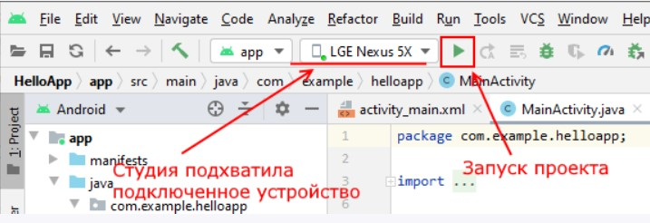

Первый проект в Android Studio
Теперь создадим первое приложение в среде Android Studio для операционной системы Android. Откроем Android Studio и на начальном экране выберем пункт New Project:
При создании проекта Android Studio вначале предложит нам выбрать шаблон проекта:
Android Studio предоставляет ряд шаблонов для различных ситуаций. Выберем в этом списке шаблон Empty Activity, который предосавляет самый простейший фукционал, необходимый для начала, и нажмем на кнопку Next. После этого отобразится окно настроек нового проекта:
В окне создания нового проекта мы можем установить его начальные настройки:
- В поле Name вводится название приложения. Укажем в качестве имени название HelloApp
- В поле Package Name указывается имя пакета, где будет размещаться главный класс приложения. В данном случае для тестовых проектов это значение не играет ольшого значения, поэтому установим com.example.helloapp.
- В поле Save Location установливается расположение файлов проекта на жестком диске. Можно оставить значение по умолчанию.
- В поле Language в качестве языка программирования укажем Kotlin
- В поле Minimum SDK указывается самая минимальная поддерживаемая версия SDK. Оставим значение по умолчанию - API 21: Android 5.0 (Lollipop), которая означает, что наше приложение можно будет запустить начиная с Android 5.0, а это 94% устройств. На более старых устройствах запустить будет нельзя. Стоит учитывать, что чем выше версия SDK, тем меньше диапазон поддерживаемых устройств.
Далее нажмем на кнопку Finish, и Android Studio создаст новый проект:
Вначале вкратце рассмотрим структуру проекта, что он уже имеет по умолчанию
Проект Android может состоять из различных модулей. По умолчанию, когда мы создаем проект, создается один модуль - app. Модуль имеет три подпапки:
- manifests: хранит файл манифеста AndroidManifest.xml, который описывает конфигурацию приложения и определяет каждый из компонентов данного приложения.
- java: хранит файлы кода на языке kotlin, которые структурированы по отдельным пакетам. Так, в папке com.example.helloapp (название которого было указано на этапе создания проекта) имеется по умолчанию файл MainActivity.kt с кодом на языке Kotlin, который представляет класс MainActivity, запускаемый по умолчанию при старте приложения
-
res: содержит используемые в приложении ресурсы. Все ресурсы разбиты на подпапки.
- папка drawable предназначена для хранения изображений, используемых в приложении
- папка layout предназначена для хранения файлов, определяющих графический интерфейс. По умолчанию здесь есть файл activity_main.xml, который определяет интерфейс для класса MainActivity в виде xml
- папки mipmap содержат файлы изображений, которые предназначены для создания иконки приложения при различных разрешениях экрана.
-
папка values хранит различные xml-файлы, содержащие коллекции ресурсов - различных данных, которые применяются в приложении. По умолчанию здесь есть два файла и одна папка:
- файл colors.xml хранит описание цветов, используемых в приложении
- файл strings.xml содержит строковые ресурсы, используемые в приложении
- папки themes хранит две темы приложения - для светлую (дневную) и темную (ночную)
Отдельный элемент Gradle Scripts содержит ряд скриптов, которые используются при построении приложения.
Во всей этой структуре следует выделить файл MainActivity.kt, который открыт в Android Studio и который содержит логику приложения и собственно с него начинается выполнение приложения. И также выделим файл activity_main.xml, который определяет графический интерфейс - по сути то, что увидит пользователь на своем смартфоне после загрузки приложения.
Запуск проекта
Созданный выше проект уже содержит некоторый примитивный функционал. Правда, этот функционал почти ничего не делает, только выводит на экран строку "Hello world!". Тем не менее это уже фактически приложение, которое мы можем запустить.
Для запуска и тестирования приложения мы можем использовать эмуляторы или реальные устройства. Но в идеале лучше тестировать на реальных устройствах. К тому же эмуляторы требуют больших аппаратных ресурсов, и не каждый компьютер может потянуть требования эмуляторов. А для использования мобильного устройства для тестирования может потребоваться разве что установить необходимый драйвер.
Режим разработчика на телефоне
По умолчанию опции разработчика на смартфонах скрыты. Чтобы сделать их доступными, надо зайти в Settings About phone (Настройки > О телефоне) (в Android 8 это в Settings > System > About phone (Настройки > Система > О телефоне)) и семь раз нажать Build Number (Номер сборки).
Теперь необходимо включить отладку по USB. Для этого перейдем в Settings > System > Advanced > Developer options или Настройки > Система > Дополнительно > Для разработчиков (в Android 8 это в Settings > System > Developer options или Настройки > Система > Для разработчиков ).
И включим возможность отладки по USB:
Запуск приложения
Подключим устройство с ОС Android (если мы тестируем на реальном устройстве) и запустим проект, нажав на зеленую стрелочку на панели инструментов.
Выберем устройство и нажмем на кнопку OK. И после запуска мы увидим наше приложение на экране устройства: